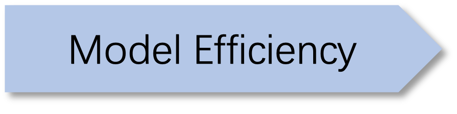

|
I am a final-year Ph.D. student advised by Prof. Jingrui He at the University of Illinois Urbana-Champaign. Prior to joining UIUC in 2021, I earned my B.S. degree in Computer Science from University of Science and Technology of China, School of the Gifted Young. My research primarily centers on enhancing the personalization and efficiency of LLMs across various modalities and disciplines, with the ultimate goal of making ML models more adaptive and accessible. My research interests covers a wide range of topics:
|
|
|

|
|
Preprint |
-
Evo-Memory: Benchmarking LLM Agent Test-time Learning with Self-Evolving Memory
Tianxin Wei, Noveen Sachdeva, Benjamin Coleman, Zhankui He, Yuarchen Bei, Xuying Ning, Mengting Ai, Yunzhe Li, Jingrui He, Ed H. Chi, Chi Wang, Shuo Chen, Fernando Pereira, Wang-Cheng Kang, Derek Zhiyuan Cheng
arXiv 2025. Code
-
MC-Search: Evaluating and Enhancing Multimodal Agentic Search with Structured Long Reasoning Chains
Xuying Ning*, Dongqi Fu*, Tianxin Wei*, Mengting Ai, Jiaru Zou, Ting-Wei Li, Hanghang Tong, Yada Zhu, Hendrik Hamann, Jingrui He
Under Review. NeurIPS 2025 Workshop on on Evaluating the Evolving LLM Lifecycle. Code
-
CoFiRec: Coarse-to-Fine Tokenization for Generative Recommendation
Tianxin Wei*, Xuying Ning*, Xuxing Chen, Ruizhong Qiu, Yupeng Hou, Yan Xie, Shuang Yang, Zhigang Hua, Jingrui He
arXiv 2025. Code
-
Inference Scaling of LLM Ensembling: Bridging Token Spaces with Token Translation
Tianxin Wei, Zhichen Zeng, Ruizhong Qiu, Zhining Liu, Xuying Ning, Xinrui He, Wenxuan Bao, Qi He, Xianfeng Tang, Hanghang Tong, Jingrui He
Under Review. Code

-
DiffKGW: Stealthy and Robust Diffusion Model Watermarking
Tianxin Wei, Ruizhong Qiu, Yifan Chen, Yunzhe Qi, Jiacheng Lin, Wenju Xu, Sreyashi Nag, Ruirui Li, Hanqing Lu, Zhengyang Wang, Chen Luo, Hui Liu, Suhang Wang, Jingrui He, Qi He, Xianfeng Tang
Under submission. Code
-
Panda: Test-Time Adaptation with Negative Data Augmentation
Ruxi Deng, Wenxuan Bao, Tianxin Wei, Jingrui He
AAAI 2026. Code
-
CLIMB: Class-imbalanced Learning Benchmark on Tabular Data
Zhining Liu, Zihao Li, Ze Yang, Tianxin Wei, Jian Kang, Yada Zhu, Hendrik Hamann, Jingrui He, Hanghang Tong
NeurIPS 2025. Code
-
Latte: Collaborative Test-Time Adaptation of Vision-Language Models in Federated Learning
Wenxuan Bao, Ruxi Deng, Ruizhong Qiu, Tianxin Wei, Hanghang Tong, Jingrui He
ICCV 2025. Code
-
Learning to Instruct: Fine-Tuning a Task-Aware Instruction Optimizer for Black-Box LLMs
Yunzhe Qi, Jinjin Tian, Tianci Liu, Ruirui Li, Tianxin Wei, Hui Liu, Xianfeng Tang, Monica Xiao Cheng, Jingrui He
EMNLP 2025. (Findings) Code
-
SelfElicit: Your Language Model Secretly Knows Where is the Relevant Evidence
Zhining Liu, Rana Ali Amjad, Ravinarayana Adkathimar, Tianxin Wei, Hanghang Tong
ACL 2025. (Main) Code
-
i2VAE: Interest Information Augmentation with Variational Regularizers for Cross-Domain Sequential Recommendation
Xuying Ning, Wujiang Xu, Tianxin Wei, Xiaolei Liu
UAI 2025. Code
-
Graph4MM: Weaving Multimodal Learning with Structural Information
Xuying Ning, Dongqi Fu, Tianxin Wei, Wujiang Xu, Jingrui He
ICML 2025. Code
-
Breaking Silos: Adaptive Model Fusion Unlocks Better Time Series Forecasting
Zhining Liu, Ze Yang, Xiao Lin, Ruizhong Qiu, Tianxin Wei, Yada Zhu, Hendrik Hamann, Jingrui He, Hanghang Tong
ICML 2025. Code
 -
Connecting Domains and Contrasting Samples: A Ladder for Domain Generalization
Tianxin Wei*, Yifan Chen*, Wenxuan Bao, Jingrui He
KDD 2025. (Full Research, AR: 19%). Code
-
MLP Fusion: Towards Efficient Fine-tuning of Dense and Mixture-of-Experts Language Models
Mengting Ai*, Tianxin Wei*, Yifan Chen*, Zeming Guo, Jingrui He
v1 accepted to ICML 2023. This work has been submitted to the IEEE for possible publication. Code
-
ResMoE: Space-efficient Compression of Mixture of Experts LLMs via Residual Restoration
Mengting Ai*, Tianxin Wei*^, Yifan Chen*, Zhichen Zeng, Ritchie Zhao, Girish Varatkar, Bita Darvish Rouhani, Xianfeng Tang, Hanghang Tong, Jingrui He
KDD 2025. (Full Research, AR: 19%). Code
-
Meta Clustering of Neural Bandits
Yikun Ban, Yunzhe Qi, Tianxin Wei, Lihui Liu, Jingrui He
KDD 2024. (Full Research, AR: 20%). Code
-
Graph Mixup on Approximate Gromov–Wasserstein Geodesics
Zhichen Zeng, Ruizhong Qiu, Zhe Xu, Zhining Liu, Yuchen Yan, Tianxin Wei, Lei Ying, Jingrui He, Hanghang Tong
ICML 2024 (Full Research, AR: 27.5%). Code
-
Language Models as Semantic Indexers
Bowen Jin, Hansi Zeng, Guoyin Wang, Xiusi Chen, Tianxin Wei, Ruirui Li, Zhengyang Wang, Zheng Li, Yang Li, Hanqing Lu, Suhang Wang, Jiawei Han, Xianfeng Tang
ICML 2024 (Full Research, AR: 27.5%). Code
- Towards Unified Multi-Modal Personalization: Large Vision-Language Models for Generative Recommendation and Beyond
Tianxin Wei, Bowen Jin, Ruirui Li, Hansi Zeng, Zhengyang Wang, Jianhui Sun, Qingyu Yin, Hanqing Lu, Suhang Wang, Jingrui He, Xianfeng Tang
ICLR 2024 (Full Research, AR: 31%). Code
- Scalable and Effective Generative Information Retrieval
Hansi Zeng, Chen Luo, Bowen Jin, Sheikh Muhammad Sarwar, Tianxin Wei, Hamed Zamani
WWW 2024 (Oral, Full Research, AR: 20.2%). Code
- TAU: Trajectory Data Augmentation with Uncertainty for Next POI Recommendation
Zhuang Zhuang, Tianxin Wei^, Lingbo Liu, Heng Qi, Yanming Shen, Baocai Yin
AAAI 2024 (Full Research, AR: 24%). Code
- Meta-Learning with Neural Bandit Scheduler
Yunzhe Qi, Yikun Ban, Tianxin Wei, Jiaru Zou, Huaxiu Yao, Jingrui He
NeurIPS 2023 (Full Research, AR: 26.1%). Code
- Adaptive Test-Time Personalization for Federated Learning
Wenxuan Bao*, Tianxin Wei*, Haohan Wang, Jingrui He
NeurIPS 2023 (Full Research, AR: 26.1%). Code
- NTK-approximating MLP Fusion for Efficient Language Model Fine-tuning
Tianxin Wei*^, Zeming Guo*, Yifan Chen*, Jingrui He
ICML 2023 (Full Research, AR: 27.9%). Code
- Augmentations in Hypergraph Contrastive Learning: Fabricated and Generative
Tianxin Wei*, Yuning You*, Tianlong Chen, Yang Shen, Jingrui He, Zhangyang Wang
- Comprehensive Fair Meta-learned Recommender System
Tianxin Wei, Jingrui He
KDD 2022 (Full Research, AR: 15.0%). Code
- Model-Agnostic Counterfactual Reasoning for Eliminating Popularity Bias in Recommender System
Tianxin Wei, Fuli Feng, Jiawei Chen, Ziwei Wu, Jinfeng Yi, Xiangnan He
KDD 2021 (Full Research, AR: 15.4%). Code
- Causal Intervention for Leveraging Popularity Bias in Recommendation
Yang Zhang, Fuli Feng, Xiangnan He, Tianxin Wei, Chonggang Song, Guohui Ling and Yongdong Zhang
SIGIR 2021 (Best Paper Honorable Mention, 1 out of All, Full Research, AR: 21%). Code
- Fast Adaptation for Cold-start Collaborative Filtering with Meta-learning
Tianxin Wei, Ziwei Wu, Ruirui Li, Ziniu Hu, Fuli Feng, Xiangnan He, Yizhou Sun, and Wei Wang
ICDM 2020 (Full Research, AR: 9.8%). Code
- Unpaired Multimodal Neural Machine Translation via Reinforcement Learning
Yijun Wang*, Tianxin Wei*, Qi Liu, Enhong Chen
DASFAA 2021 (Full Research, AR: 20%).
- AR-Stock: Deep Augmented Relational Stock Prediction
Tianxin Wei, Yuning You, Tianlong Chen
AAAI 2021 Workshop on Knowledge Discovery from Unstructured Data (Oral). Code
-
Graph Contrastive Learning: An Odyssey towards Generalizable, Scalable and Principled Representation Learning on Graphs
Yan Han, Yuning You, Wenqing Zheng, Scott Hoang, Tianxin Wei, Majdi Hassan, Tianlong Chen, Ying Ding, Yang Shen, Zhangyang Wang
IEEE Data Engineering Bulletin.
|
KDD 2025 Outstanding Reviewer University Nomination (Top3) for Apple Scholar in AI/ML 2024 Amazon Internship Fellowship in 2024 ($40k) Conference Presentation Award, UIUC 2023 SIGIR 2021 Best Paper Honorable Mention NeurIPS 2023 Scholar Award NeurIPS 2022 Scholar Award ICML 2023 Grant Award Program Committee/Reviewer: ICML (2021-2025), NeurIPS (2022-2025), ICLR (2023-2025), KDD (2023-2025), AAAI (2023-2024), CIKM (2021-2023), WSDM 2023, ACL 2023, EMNLP 2023, LOG 2022 Journal Reviewer: TPAMI, TKDD, TOIS, TKDE, DMKD, Machine Learning, TMLR |
|
|